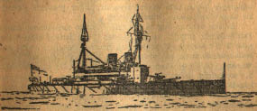
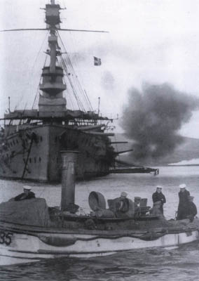
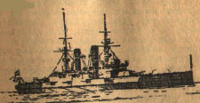
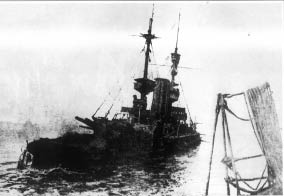
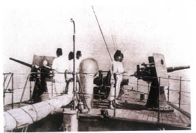

Şimdi bu yiğitlik destanını, o ana baba gününde Türkün düşman olarak karşısında bulunmuş, o kahredici yumruğun şiddetini bütün acılığı ile tatmış bir millet kaynağından, bir İngiliz muharririnin kaleminden dinlemekte büsbütün başka bir çeşni olacağına inanıyorum. Çarpıştığı düşman kadar fedakâr ve yiğit olduğunu, düşmanının meziyetlerini açıkça kabul ve itiraf etmekle isbateden, bir İngiliz muharriri, (Kat’î neticeli deniz cenkleri) serisine soktuğu “Çanakkale Muharebesi”ni bakın nasıl anlatıyor ve pek çoklarımızca hâlâ bilinmeyen çeşitli gerçekleri ne yolda açıklıyor:
İngiliz amiralinin komutası altında muazzam bir kuvvet vardı: Sekiz tane (38) santimetrelik dev toplu “Queen” “Agamemnon”, “Cornwallis”, “Triumph”, “Lord Nelson”, “Ocean”, “Majestic”, “Goliath[11]”, “Vengeance”, “Albion”, “Canopus”, “Prens George”, “Irresistible”, “Swiftsure” saffı harp zırhlıları.
Ayrıca Fransızların “Suffren”, “Bouvet”, “Gaulois” ve “Charlemagne” zırhlıları da bu pek kuvvetli deniz armadasına katılmıştı.
Bunlara düzinelerle destroyer, torpidobot, arama ve tarama gemileri ve denizaltıları da ilâve etmek lâzımdır.
18 Mart sabahı saat 8.30’da bu azametli filo demir kaldırıp hafif bir lodos rüzgârı ile yola çıktı ve Boğazlara yaklaşmaya başladı.
İlk fırka “Queen Elizabeth”, “Agamemnon”, “Lord Nelson” saffı harp zırhlılarıyla “Inflexible” muharebe kruvazöründen teşkil edilmişti. Fırkanın provasında mayın tarayıcı tertibatla teçhiz edilmiş destroyerler seyrediyorlardı.
Zırhlılar Boğaz’ın methalinde (15000) yarda yaklaşınca muharebe mevkilerini aldılar.

18 Mart hücumuna katılan İngiliz hattı harp gemilerinden: “Lord Nelson” zırhlısı (Agamemnon zırhlısı da bu kuvvetli geminin eşi idi.)
Dört muharebe gemisinden mürekkep bu birinci fırkayı Türk sahra toplarından korumak maksadıyla “Prens George” zırhlısı fırkanın kuzey baş omuzluğunda, “Triumph” zırhlısı güney kıç omuzluğunda mevki almışlardı.
Dört Fransız zırhlısı ise, fırsat zuhur eder etmez, istihkâmları dövmek üzere, ilk işarete hazır bir halde duruyorlardı.
Hazırlanan plâna göre zırhlılardan açılacak korkunç ateş yüzünden kale ve istihkâmlardaki topçular toplarından uzaklaşmaya mecbur edilecekler, sahra topları susturulacak ve “Cornwallis” ile “Canopus” zırhlılarının himayesinde işe başlayacak altı arama tarama gemisi mayın tarlalarını temizleyerek filoya yol açacaklardı.
Plan bu idi ama, saat 10.58 de ateşe başlayan Türklerin Alman havan topları büyük endişelere sebep oldu ve deniz toplarıyla kara topları arasında kuvvetli ve şiddetli bir mücadele başladı.
“ Queen Elizabeth” dretnotu, iki tane (35) ve yedi tane de (25) santimetrelik Krupp topuyla donatılmış kudretli (19) numaralı Türk istihkâmını ateş altına alacaktı. Diğer üç zırhlı ise (9), (13), (16) ve (17) sayılı istihkâmlara ateş ediyorlardı. Bu istihkâmlarda (28) santimetrelikten (23) santimetrelik toplara kadar çeşitli silâhlar vardı. Türkler seyyar havan toplarından da faydalanıyorlardı. Bu yüzden gemilerden hiçbiri demirleyip ateşini tanzim edemiyordu.
Saat 11.04’te “Lord Nelson” zırhlısı düşman mevzilerinden birine (23) santimetrelik mermi isabet ettirdi ama biraz sonra da büyük bir düşman mermisi zırhlının grandi çanaklığını yalayarak geçti.
Saat on bir buçuğa doğru “Queen Elizabeth” hedefine doğru ateşe başlıyordu. İlk iki mermisi Çanakkale kasabasına düşmüş ve büyük bir yangın çıkarmıştı. Düşman, cephanesini tasarrufla kullanmak mecburiyetinde bulunduğu için, yavaş ateşle mukabele ediyordu. Mamafih Boğaz’ın her iki sahilindeki havan toplarıyla böyle yavaş davranmıyorlar, diğer gemileri şiddetli bir ateş altına almış bulunuyorlardı.
Bunun üzerine İngiliz amirali, Fransız zırhlılarına harbe katılmalarını emretti ve bu yüzden Türk istihkâmları daha şiddetli bir atışa başlayarak çok geçmeden mesafeyi bulup isabetler kaydetmeğe başladılar. “Queen Elizabeth” üç isabet almış ve saat 12.30 da Fransız “Gaulois” zırhlısı (35) santimetrelik bir merminin isabetiyle o kadar hırpalanmıştı ki batmamak için Boğaz’dan çıkıp Tavşan adalarında kumluğa oturmak mecburiyetinde kaldı. “Queen Elizabeth”in topçu kumanda mevkii paralanmış ve ikinci bir (20) santimetrelik mermi vinç metaforasını hurdahâş etmiş, bir üçüncüsü de ön bacada bir delik açmıştı.
İstihkamlardan bakılınca bu sırada durum pek tehditkâr görünüyor ve Türkler on tane İngiliz-Fransız zırhlısının Boğaz’ı zorlayıp geçmek üzere bulunduklarını sanıyorlardı. Binaenaleyh cephane azlığına filân ehemmiyet vermeden ateşi hızlandırdılar. Artık kesin bir savaşın en kesin safhası başlamış bulunuyordu. Şayet o öğleyin filo istihkâmları yenip de Boğaz’dan geçebilseydi İstanbul düşmüş olacaktı.
Bu yüzden muharebe en yüksek şiddetine varmış ve bilhassa Asya sahilinde mevki alan “Inflexible” muharebe kruvazörü fena halde hırpalanmaya başlamıştı. Zira hemen bütün istihkâmlar hiddet ve şiddetlerini bu gemi üzerinde temerküz ettirmişlerdi. Ayrıca “Erenköy”deki havan topları da bu gemiye rahat vermiyordu. Bu hususî ehemmiyet sebepsiz değildi. Zira on gün kadar evvel Türklerin Nusrat mayın gemisi bir gece gizlice “Erenköy”ün önüne kadar yükselip taşıdığı (20) kadar mayını o sulara dökmüştü ki İngilizlerin bundan zerre kadar haberleri yoktu ve onlar bu havaliyi taramış olduklarını sanıyorlardı. (12) yahut (13) kadem su çeken bir destroyer bu sulardan mayınlara çarpmadan geçebilirdi ama fazla su çeken bir zırhlı (3000) yardalık bu tehlikeli mıntıkadan bir mayına çarpmadan geçemezdi. İşte Türkler “Inflexible”i sıkıştırmak suretiyle bu mayın kapanına sevk etmek istiyorlardı.

18 Mart hücumuna iştirak eden düşman gemilerinden: İngilizlerin “Majestic” zırhlısı (Bu zırhlı Çanakkale sularında bilâhare bir denizaltı tarafından batırılmıştır.)
Saat 12.20 de bir Türk mermisi “Inflexible”in üç ayaklı ön direğinin merkezinde infilâk ediyor ve kaptan mevkiini tutuşturuyordu. Sonra başka bir mermi muharebe kruvazörünün târetine isabet etti, hemen biraz sonra da birbiri ardınca üç isabet daha oldu. Düşman bu yepyeni ve güzel geminin top menzilini bulmuştu; saat 2.27’de ön çanaklığın muharebeden sâkıt olup aşağıda toplarla olan irtibatın kesildiği rapor edildi.
Türkler, mütehassıs Alman topçu zabitlerinin sevk ve idaresi altında, sanki talim atışı yapıyorlarmış gibi mükemmel iş görüyorlardı.[12] Mahaza düşmanın ağır top cephanesi süratle azalıyor ve müttefiklerin tehditleri korkunç bir mahiyet alıyordu. Bu tarihi öğle vaktinin her dakikası, hattâ saniyesi vahimin vahimi idi. “Inflexible” iki isabet daha aldı ve sonra ateş kontrol tertibatı hedef alınmış ve bu yüzden yüksek mahrekle ateş edilmiş bir mermi “Inflexible”in ateş tanzimi mevkiinden iki üç kadem yüksekliğindeki işaret serenine isabet ederek patlamış, serpintiler aşağıya doğru serpilip kontrol kamarasının damını ve civarlarını parçalamıştı. Burada “Inflexible”in atışlarını idare eden Yarbay “Vernen” bulunuyordu. Bu zatla yardımcısı ağır surette yaralandılar. Ayrıca üç nefer öldü, bir o kadar da yaralandı.
Yarbay “Verner” yaralarının vehametine ve duyduğu ıstıraba rağmen, sanki hiç yaralanmamış gibi, doğrulup komuta borusuna kadar sürüklendi ve prova mürsile istasyonunda vazife gören Teğmen “Leisester Howe” ye şu emri verdi:
• Süvariye prova kontrol mevkiinin muharebeden hariç kaldığını ve burada yukarıdaki bizlerin hepimizin ölmüş veyahut ölmek üzere bulunduğumuzu bildirin. Yukarıya biraz da morfin gönderin!..
Zırhlı kulenin aşağısında bulunan gemi doktoru hemen güverteye fırlayıp yaralıların imdadına seğirtmek istediyse de yanan kumanda köprüsü ve sıcak demirler yüzünden daha ziyade ilerlemedi. Bu müddet içinde duman tabakası ve alevler gittikçe yükseliyordu. “Verner” yeniden komuta borusundan aşağıya şöyle seslendi:
• Allah aşkına yangını söndürün! Yoksa burada hepimiz kebap olacağız!..
“Inflexible” muharebe kruvazörünün ikinci süvarisi Yarbay “Wıgram” ateşten kızmış demir iskele parmaklıklarının ellerini kavurmasına ehemmiyet vermeyerek yukarı tırmandı ve “Verner”i bir tarafına yaslanmış, fakat hâlâ kendine hâkim ve sakin bir sesle konuşur bir halde buldu.
İnfilâkın şiddetinden gemi bir mil kadar geri düşmüştü. Lâkin ateş söndürüldükten sonra yeniden mevkiini alıp ateşe devam etti.

18 Mart hücumunda hırpalanan düşman gemilerinden: “Triumph” İngiliz zırhlısı (Bu gemi bilâhare Çanakkale sularında bir denizaltı tarafından batırılmıştır)
Öğleden sonra saat birden biraz evvel “Agamemnon” saffı harp zırhlısı da birbiri peşi sıra üç isabet almış ve arka bacası parçalanıp açılmış, nilüfer çiçeğine dönmüştü. Saat ikiye doğru ise bu gemi, zırh kuşağının altından bir düzine, kuşağının üstünden de yedi isabet almıştı.
Bunun üzerine İngiliz amirali daha ilerilere doğru yol açıp mayın taramaları için arama tarama gemilerine emir verdiyse de Türkler bu gemilere karşı o kadar şiddetli ve isabetli bir ateş açmışlardı ki amiral bu emrini iptal mecburiyetinde kaldı.
Öğleden sonra saat ikide “Ocean”, “Albion”, “Majestic”, “Swiftsure” ve “Irresistible” saffı harp zırhlıları Boğaz’a girip Fransız zırhlılarını değiştirmek emrini aldılar ve muharebenin en feci safhası da bu suretle başlamış oldu.
Mevkilerini yeni gelen İngiliz arkadaşlarına terk etmek üzere Boğaz’dan çekilmeğe başlayan Fransız fırkası Asya sahili istikametinden pek uzak bir mesafede geri çekilirken Fransız fırkasına rehberlik eden “Bouvet” zırhlısı Türklerin “Nusrat” mayın gemisinin döktüğü mayınlardan birine çarparak, ne olup bittiği anlaşılıncaya kadar, alabora oldu ve battı. Fransız zırhlısının tam yolla seyrederken görünmeyen tehlikeye çarpması ve alabora olup batması tam iki dakika otuz beş saniye sürmüştü. “Bouvet” mürettebatından pek azı kurtuldu. Bir nefer, gemi alabora olurken, târetin alt deliğinden kendini dışarı atmış ve bir tahliye gemisi tarafından sağ salim kurtarılmıştı. Her ne kadar tahliye gemileri ve sandalları insan kurtarmak için ellerinden geleni esirgemedilerse de zırhlının 700 kişilik mürettebatından 15 subay ve gedikli ile 51 erden başka bir can kurtarılmamıştı.
“Bouvet”nin kıç omuzluğunda seyretmekte olan “Triumph” zırhlısı da böyle bir feci âkıbete az kalsın uğruyordu. “Lord Nelson” zırhlısı ise suların cereyanına kapılmış bir mayına âdeta sürünerek geçti. Fakat saat 3.32 de “Irresistible” saffı harp zırhlısı ya bir mayına çarpmış, yahut da su kesiminin altından bir mermi isabeti almış olacak ki süratle bir tarafına bayılmaya başladıysa da hemen batmadı. Saat 3.45’te “Inflexible” muharebe kruvazörü yeni isabetler alıyor ya patlayan bir mayın, yahut da isabet eden büyük çapta bir mermi yüzünden, tepeden tırnağa kadar, şiddetle sarsılıyordu. Her ne kadar bordada bir delik açılmadıysa da şiddetli sarsıntı, alev alev yanan ön çanaklıktan biraz evvel aşağı indirilmiş olan zavallı yaralılara feci bir şekilde tesir etti. Bir çeyrek sonra da “Inflexible” zırhlısı sancak baş omuzluğundan bir mayına çarpıyordu.
Çok gürültülü bu son infilâk koca zırhlıyı âdeta sudan fırlatmış ve yalpaya düşürmüştü. Sonra zırhlı sancak bordasına yatmaya başlamış, gemideki bütün ışıklar sönmüş, feci ve acayip bir sessizlik bütün tekneyi kaplamıştı. Yağ lambaları yakılıp etraf biraz aydınlandığı vakit makinelerin yavaş yavaş hâlâ çalışmakta olduğu görüldü. Geminin makine dairesinde tam bir intizam ve disiplin hüküm sürüyor, herkes vazifesi başında bulunuyordu. Geminin elektrikle işleyen havalandırma tertibatı durmuş ve ateşçilerle makine dairesi mürettebatını serinletmek için yangın söndürme hortumlarının kullanılmasına lüzum hâsıl olmuş bulunmasına rağmen mürettebatın sükûneti ve hareket tarzı her türlü sitayişin üstünde idi. Bunların hepsi vazifeleri başında kalmak istediklerini söylüyorlardı.
“Inflexible” muharebe kruvazörünün durumu şimdi pek ciddileşmiş, hattâ vahimleşmişti. Bu yepyeni ve güzel muharebe kruvazörü de “Bouvet”nin uğradığı âkıbete namzet görünüyordu. Mayının açtığı delikten gemiye 2000 ton kadar su girmiş ve aşağıda torpido dairesinde vazife başında bulunan 39 nefer ve gedikli suların birdenbire hücumuna maruz kalarak boğulmuşlardı. Bunun üzerine “Inflexible” yavaş yavaş muharebe hattından çekilip Boğaz’dan çıkmaya başladıysa da bu sırada üç düşman mermisi gemiye âdeta sürünerek geçti.

18 Mart hücumunun kurbanlarından: İngilizlerin “Irresistible” zırhlısı
Öğleden sonra saat beşe gelmiş ve muharebe kruvazörünün bir tanesi müstesna bütün filikaları parçalanmıştı. Eldeki o tek işkampavya [13]da, gemi birdenbire kaynayıp gittiği takdirde, mayna edip yaralıları kurtarmak için yaralılara tahsis olundu ve yaralılarda bu filikaya yerleştirildiler. Gayet dikkatle seyir ve maharetle sevk ve idare yüzünden “Inflexible” batmadan Tenedos adasına ( Bozcaada) varabildi ve saat altıda bu adanın önünde perişan bir halde funda demir etti.
Gemide mayının açtığı delik 30 kademe 26 kadem büyüklüğünde idi ve sular yirmi bölmeyi doldurmuştu. Bu azim tazyik karşısında bölme perdelerinin çökmemeleri bir mucize idi.
Vakit kaybedilmeden gemideki yaralılar “Sudan” adlı hastane gemisine nakil olundu ise de kahraman Yarbay “Verner” o akşam hayata gözlerini yumdu; Teğmen “Blaker” de ertesi sabah öldü.
“Inflexible” muharebe kruvazörünün Boğaz’dan çıkıp ricate mecbur bırakılmış olmasına rağmen Boğaz’da harp hâlâ bütün şiddetiyle devam etmekte idi. Yaralı “Irresistible” zırhlısının saat 3.32’de birdenbire bir tarafına yatıverdiği görüldü. Zırhlı ya bir mayına çarpmış, yahut da (19) numaralı Türk tabyasından ağır bir mermi isabeti almış olacaktı. Bu gemi (Rumeli Mecidiye) istihkâmının (10.000) metre mesafesine kadar sürüklendikten sonra Asya sahiline doğru dönmüş ve saat 4.15’te makineleri stop etmiş bir halde Erenköy koyunun açığına yaklaşmıştı ki “Nusrat”ın döktüğü mayınlardan birine çarpmış ve zırhlının sancak makine dairesinin altında büyük bir delik açılmıştı. Çok geçmeden iskele sancak makine dairesine de su hücum etmiş ve gemi batmaya başlamıştı.
Mürettebat gemide ahşap eşya namına ellerine ne geçtiyse denize atmaya ve bu suretle kendilerine cankurtaran simidi sağlamaya başladılar. Bu müddet içinde düşman mesafeyi yeniden tanzim etmiş ve yaralı zırhlıyı şiddetli bir ateş altına almıştı.
Bu şiddetli ateşe rağmen “Wear” destroyeri büyük bir cesaretle yaralı zırhlıya yanaşıyor ve gemi mürettebatından 582 neferle 28 subayı kurtarıyordu. Fakat zırhlının süvarisi Albay “P. L. Dent” ile ikinci süvari ve birkaç fedai zırhlıyı kurtarabilmek ümidiyle gemide kaldılar. “Ocean” zırhlısı da yaralı arkadaşının imdadına seğirtti ve yağmur gibi yağan Türk mermilerine rağmen bir çelik halat uzatıp “Irresistible”i yedeğe almaya teşebbüs ettiyse de o da bir mermi isabeti alıp dümen donanımı sakatlandı ve kendi kendini idareden aciz bir halde daireler çizmeğe başladı. Biraz sonra bütün filonun dehşetle açılmış gözleri önünde o da “Nusrat”ın mayın tarlasına düşüp bir mayına çarptı ve fena halde bir tarafına meyletti. Artık “Ocean” zırhlısı da düşmanın mermilerine sabit bir hedef vazifesi görmeğe başlamıştı.
Bu korkunç manzara karşısında “Jed”, “Chelmer” ve “Colne” destroyerleri yiğitçe ileri atılıp, “Ocean”ın mürettebatını aldılar. Bu kurtarma ameliyesi esnasında “Chelmer”in kazan dairesine bir isabet almış ve muhrip batmaktan güç belâ kurtulabilmişti.
Nihayet saat 7.20’de, akşam karanlığı Boğaz sularına yavaş yavaş çökmeğe başlarken İngiliz amirali kuvvetlerine
Tenedos – Bozcaada’ya ricat emrini veriyor ve bu suretle fecaatler dolu bir gün sona ermiş bulunuyordu.
* * *
“Irresistible” ve “Ocean” saffı harp zırhlıları tahliye edilmiş olmakla beraber batmamışlar ve hâlâ su üstünde yüzmekte bulunmuşlardı. O gece “Vengeance” zırhlısı sabahın dört buçuğuna kadar yaralı arkadaşlarını Boğaz methalinde beyhude yere bekleyip durdu. Bu müddet içinde ise destroyerlerle balıkçı gemileri Boğaz’ın karanlık sularında yaralı zırhlıları arayıp tarıyorlardı. Fakat bu iki gemi mukadder akıbetlerine kavuşmuş ve batmış olacaklardı.
Biri (15000), diğeri (13000) tonluk bu bir çift zırhlı geminin içlerinde canlı tek bir fert bulunmadığı halde, Boğaz sularında serseri bir halde sürüklendiklerini bir göz önüne getirin. Gövdelerinde harp sancaklarını dalgalandıran bu umacı gemilerin akıntıların ve suların tesiriyle, kendilerini sevk ve idare edecek insan kudretinden mahrum bir halde, sürüklenip dolaşmaları gerçekte hazin bir şeydi. Bütün dünya sularında yapılmış uzun seferleri ve kıymetli hizmetleri sona ermiş, makineleri ebediyen durmuştu. Bu iki zırhlının topları artık bir daha gürlemeyecekti. Bir zamanlar lekesiz bir halde tertemiz duran güvertelerine artık zulmet ve harabî çökmüştü ve bu iki büyük harp vâhidine sarf olunan emekler ve dökülen göz nuru artık sona ermiş bulunuyordu.
Bir müddet daha bu bir çift bahtsız zırhlı, Boğaz’ın karanlık sularında, Asya ve Avrupa kıyılarının derin gölgeleri içinde, sağa sola sürüklendiler, daireler çizdiler ve nihayet delik deşik gövdeli tekneleri Boğaz’ın karanlık ve kurşun renkli suları yutup gitti.
* * *
18 Mart müttefikleri için pek uğursuz, lâkin düşman için de bir kurtuluş günü oldu. İstihkâmların ve Çanakkale kasabasının alevler içinde bırakılmış olduğu bir gerçekti. Fakat Boğazlar zorlanamamış ve İstanbul yolu da açılamamıştı. İngiliz amiralinin idaresi altındaki kuvvet dışarıdan bakılınca pek haşmetli ve azametli görünmekle beraber bu kuvvet altı milden fazla Boğaz’da ilerleyememiş ve kendilerini bekleyen (315) mayının dizili bulunduğu en dar noktaya iki milden fazla sokulmaya muvaffak olamamıştı. Buna mukabil İngiliz amirali, komutası altındaki (16) hattı harp zırhlısından üçünü kaybetmiş, diğer üçü de muharebeden çıkacak derecede ağır sakatlanmıştı.
Türk istihkâmlarına gelince İngiliz-Fransız mermilerinin bol bol sarf edilmiş olmalarına rağmen asla tahrip edilememişlerdi. Türklerin Asya sahilindeki (37) ağır topundan ancak iki tanesi yıkılmıştı. Düşmanın Avrupa kıyılarındaki (30) ağır topundan ise üç tanesi tahrip olunabilmişti. Bir sürü sahra ve havan topundan ise bir taneciği olsun berhava edilememişti.

Türk topçuları
Bu tecrübeden sonra müttefikler yalnız deniz kuvveti ile Boğaz’ı bir daha zorlamaya teşebbüs etmediler. 18 Mart Türkler için, kendilerini müstevlilerin pençelerinden kurtarmış olan mesut bir gündür ve bunu gururla kutlamakta yerden göğe kadar haklıdırlar. Çünkü onlar o gün pek kesin ve parlak bir zafer kazanmışlar, çok şerefli bir başarı elde etmişlerdir.”